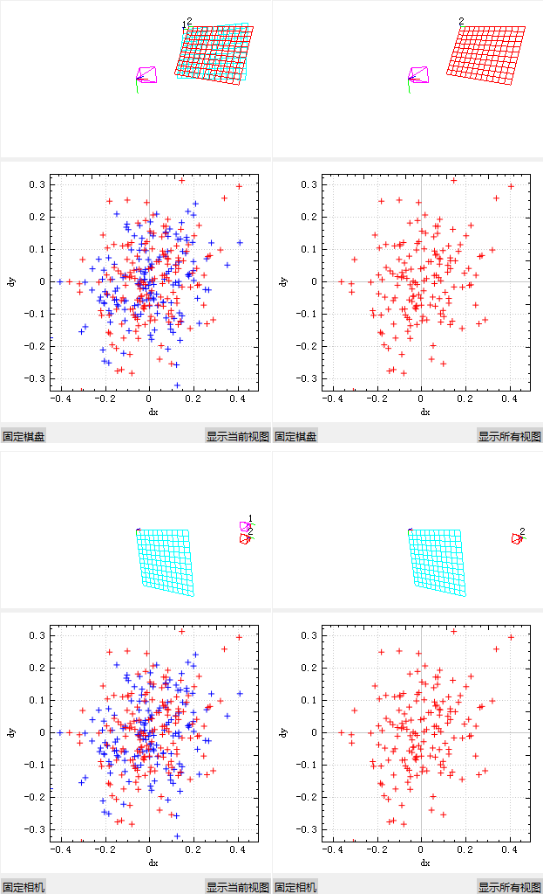
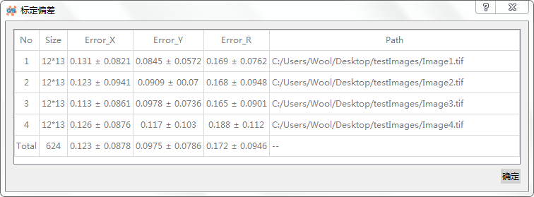

图像显示查看
图像显示
工作区左上区域进行1:1显示导入图像;
工作区右上区域对鼠标位置的图像区域进行放大显示;
通过工作区左下区域的[上一视图]和[上一视图]按钮切换查看图像.
图像信息
工作区左下区域显示了总图像数及当前视图的序号和路径信息;
工作区右上区域进行放大显示的同时也给出了当前鼠标在图像中的位置;
信息栏下方区域显示了相机内部参数及相机相对位置信息.
标定结果
通过[查看]\[标定结果...]开启标定结果信息栏.

结果渲染
通过OpenGL渲染显示相机相对棋盘的相对位置关系:
- 通过按住鼠标左键拖拽更改渲染场景的观察视角;
- 通过滑动鼠标滚轮进行视图拉近与推远以实现缩放查看.
存在[固定相机]和[固定棋盘]两个渲染方式:
- 固定相机 - 相机不动,通过摆动棋盘以改变成像视角;
- 固定棋盘 - 棋盘不动,通过移动相机以改变成像视角.
存在[显示当前视图]和[显示所有视图]两个选项:
- 显示当前视图 - 仅绘制当前视图对应的相机或棋盘位置(呈红色);
- 显示所有视图 - 绘制所有可能视图对应的相机或棋盘位置,当前视图对应的相机或棋盘位置呈红色突出显示.
标定偏差
利用QCustomPlot绘制的标定偏差图:
- 通过按住鼠标左键拖拽进行移动观察;
- 通过滑动鼠标滚轮进行缩放查看;
- 通过单击进行选中以突出显示.
存在[显示当前视图]和[显示所有视图]两个选项:
- 显示当前视图 - 仅绘制当前视图对应的标定偏差(呈红色);
- 显示所有视图 - 绘制所有可能视图对应的标定偏差,当前视图对应的标定偏差呈红色突出显示.
标定结果偏差统计
通过[查看]\[标定偏差...]查看标定偏差统计信息.
统计信息包括每幅图像角点及所有图像角点个数及这些点在X方向、Y方向及欧氏距离的重投影偏差均值和标准差.
